2025
-
플라즈마 스마일 (Introduction to Plasma KLEX)
아시아 유일 초청 강연, 강성용 원장2025 American-European Congress of Ophthalmic Surgery (AECOS)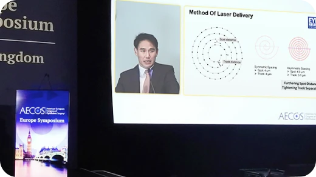
-
미국백내장굴절학회(ASCRS) 스마일 ‘최우수연구(BEST PAPER)’ 2년 연속
- Effect of Using a Novel Optical Zone Calculation Formula on Corneal Higher-Order Aberrations after Keratorefractive Lenticule Extraction.
- [BEST PAPER] Influence of Corridor Width between Cap and Optic Zone on Visual Outcomes of Keratorefractive Lenticule Extraction for Myopia.
ASCRS. Apr 25-28, 2025 -
한국백내장굴절수술학회(KSCRS) 학술심포지엄 초청강연, 최진영 원장Long-Term Clinical Outcomes of ICL(V4c vs V4)-Literature based Review.2025 KSCRS Annual Symposium
-
HORIZON 2025 ZEISS APAC Ophthalmology Symposium 스마일프로 초청강연, 정병훈 원장Influence of Corridor Width between Cap and Optic Zone on Visual Outcomes of Keratorefractive Lenticule Extraction for Myopia.2025 ZEISS APAC Ophthalmology Symposium
-
중국 주요학회 초청강연, 강성용 원장1세대 라식수술 후 발생한 불규칙한 각막 교정, 커스텀아이즈(CustomEyes) 수술을 이용한 각막 정상화 후 백내장 수술방법2025 다롄 '시력교정술 국제학회', 상해 '중국 시과학 학회 제 13회 심포지엄'
2024
-
강성용 대표원장 Plasma SMILE 유럽학회 공로상 수상Dr. David Sung Yong Kang, the surgeon who performed the largest number of lenticular procedures, i.e. procedures of the third generation of laser dioptre removal in the world and who is considered by many colleagues to be one of the most successful, fastest and most prominent surgeons in the world.2024 New Trends in Ophthalmology CSCRS(Affiliated National Societies of the ESCRS), Zagreb
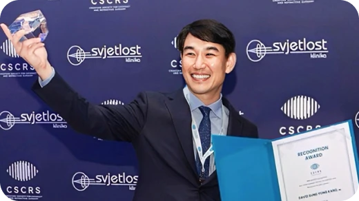
-
제 42회 유럽백내장굴절수술학회 ESCRS 발표
- Evaluation of Higher Order Aberrations Following Small Incision Lenticule Extraction with the Latest Generation of Femtosecond Laser.
- Reduction of Corneal Higher Order Aberrations after Keratorefractive Lenticule Extraction by PLASMA KLEX.
- Comparative Analysis of Aberration-Free versus Corneal Wavefront-Guided Monocular Bi-Aspheric Ablation for Presbyopia Correction in Patients with Prior Laser Vision Correction.
- 10-Year Clinical Outcomes Of V4c Implantable Collamer Lens Implantation: Longitudinal Analysis Of Visual Acuity, Endothelial Cell Density, And Vault Dynamics.
ESCRS Barcelona. Sep 6-10, 2024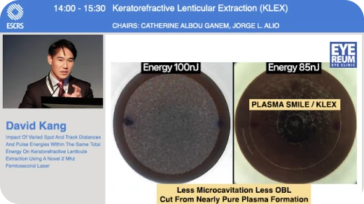
-
KSCRS ‘플라즈마 스마일(Plasma SMILE)’ 강연KeratoRefractive Lenticule Extraction(KLEX) 2024 : Personal Experience of Plasma Smile.KSCRS. Jul 13-14, 2024
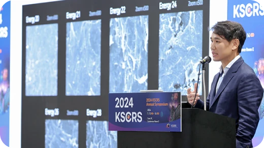
-
미국백내장굴절학회(ASCRS) BEST PAPER of Session(BPOS) 최우수연구
- Reduction of Corneal Higher Order Aberrations after Keratorefractive Lenticule Extraction By Altering Spot/Track Distances with Low Energy Thresholds.
- Evaluation of Higher Order Aberrations Following Small Incision Lenticule Extraction with the Latest Generation of Femtosecond Laser.
ASCRS Boston. Apr 5-8, 2024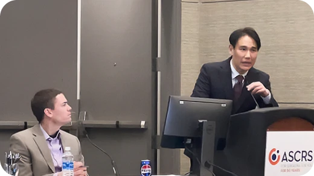
2023
-
아시아-태평양 ICL 렌즈삽입술 컨퍼런스 초청 강연10-Year Clinical Outcomes of V4c ICL Implantation.EVO ICL APAC Experts Summit. Mar 15-17, 2023
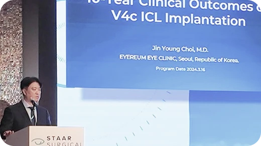
-
두바이 국제학회(International SCHWIND User Meeting) 초청 강연
- Presbymax Enhancements and Presbymax After Previous LVC.
- CWFG Rescues For Debacles After KLEX.
International SCHWIND User Meeting. Jan 26-27, 2023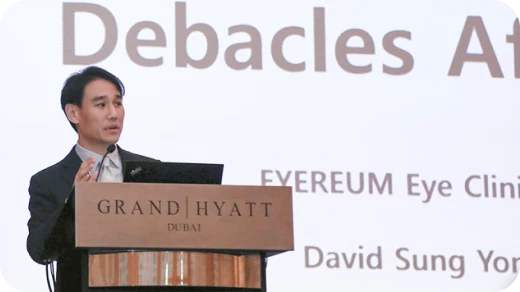
-
제 41회 유럽백내장굴절수술학회 ESCRS 발표
- Compensation Of Astigmatism By Accommodation After Small Incision Lenticule Extraction.
- Presbyopia Correction Using the PresbyMAX.
ESCRS Vienna. Sep 8-12, 2023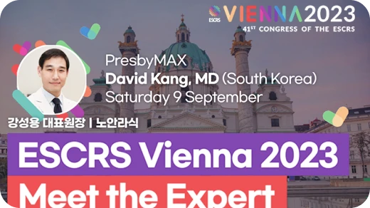
2021
-
제 39회 유럽백내장굴절수술학회 ESCRS 발표
- Comparison between refractive change and keratometric change after small incision lenticule extraction.
- Clinical outcomes of PresbyMAX monocular ablation profile in myopic presbyopia patients.
ESCRS Amsterdam. Oct 8-11, 2021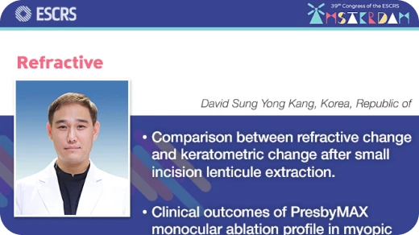
-
제 20회 대한안과의사회 정기학술대회 강연스마일라식과 올레이저라섹의 임상학적 비교 (Comparison of clinical results between SMILE vs Trans-PRK.)제 20회 대한안과의사회 정기학술대회 Sep 12, 2021
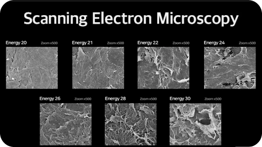
2020
-
유럽백내장굴절수술학회 ESCRS Webinar 한국 대표 강연부작용 치료를 위한 코웨이브(커스텀아이즈, CustomEyes) 수술법ESCRS. Sep 22, 2020
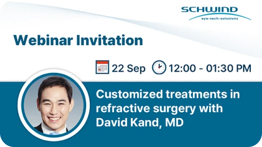
2019
-
제 5회 대한검안학회 초청 강연굴절교정 검사 시 유의할 점 및 이에 따른 수술방법의 선택제 5회 대한검안학회 Sep 22, 2019
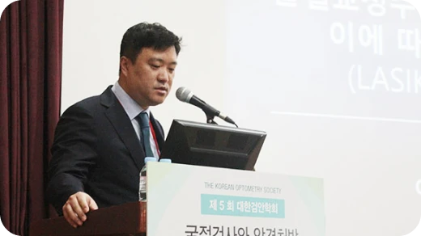
-
유럽백내장굴절수술학회 ESCRS 초청 강연Decentration measurements using the tangential curvature topography and Scheimpflug tomography pachymetry difference maps after small incision lenticule extraction procedure.ESCRS. Sep 14-18, 2019
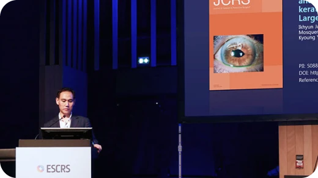
-
레바논 안과학회 로우에너지 스마일라식 강연
- Adjustment of Spherical Equivalent Correction According to Cap Thickness for Myopic SMILE.
- Corneal Biomechnics After Corneal laser Vision Correction Surgery.
Lebanese Ophthalmological Society. Jun 20-22, 2019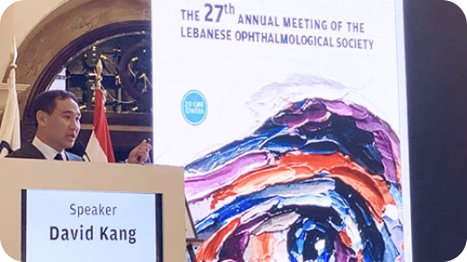
-
미국백내장굴절수술학회 ASCRS 9년 연속 초청 강연
- 스마일라식 CAP 두께에 따른 각막 교정량
- 스마일 수술 시 안구잔여난시를 없앨 수 있는 방법
- 렌자 레이저를 이용해 백내장 수술 시 난시교정 효과를 높일 수 있는 방법
ASCRS. May 3-7, 2019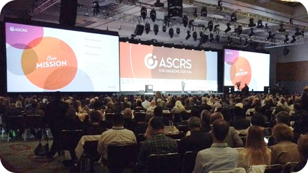
-
국제 망막학회 WRC 황반변성 치료사례 발표A case of large serous retinal pigment epithelial detachment associated with subretinal fluid resolved after androgen deprivation therapy.Retina World Congress. Mar 21-24, 2019
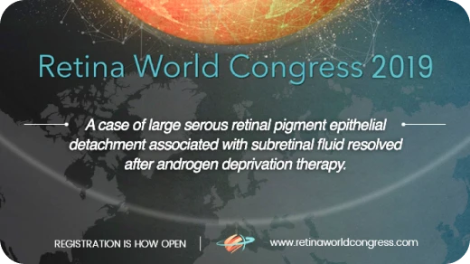
2018
-
동남아시아안과학회 Ophthalmology A to Z 초청 강연스마일라식의 고위수차 교정과 트리플 센트레이션(Triple Centration) 기법Ophthalmology A to Z. Nov 10, 2018
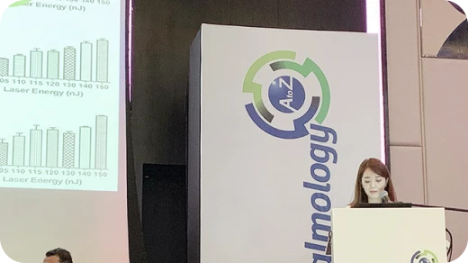
-
영국 왕립의학회 The Royal Society of Medicine 초청 강연The influence of energy settings on visual recovery and lenticule surface regularity.The Royal Society of Medicine. Jun 23, 2018
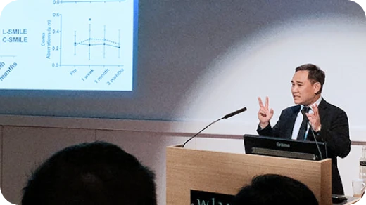
-
2018 ASCRS, Washingtond D.C. 해외 학회 발표
- 중증도 이상의 난시를 가진 근시 환자에서 스마일 라식과 코웨이브(커스텀아이즈, CustomEyes) 라섹의 임상 결과 비교
- 각기 다른 각막상피두께에서 근시성 난시를 Trans-PRK로 교정했을 때 고위수차와 임상 결과
- 스마일 수술 후 Lenticule의 decentration과 각막고위수차 간의 연관성
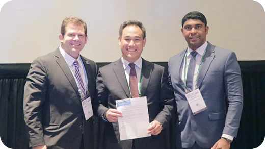
-
대한안과학회 119회 학술대회 발표
- 중등도 이상의 난시를 가진 근시 환자에서 웨이브프론트 최적화 방식과 웨이브프론트 가이드 방식의 상피통과굴절 교정레이저각막절제술의 임상결과 비교
- 스마일라식 후 lenticule 의 decentration과 각막고위수차 간의 연관성에 대한 연구
- V4c 난시용 후방인공수정체(토릭 아쿠아ICL)의 임상결과 및 회전안정성에 대한 연구
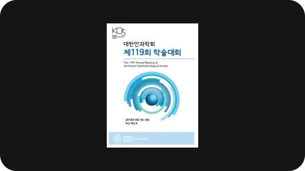
-
2018 The 33rd Asia-Pacific Academy of Ophthalmology, Hong Kong 해외 학회 발표레이저굴절교정술 전후 코르비스ST로 측정한 각막강도의 비교자세히 보기
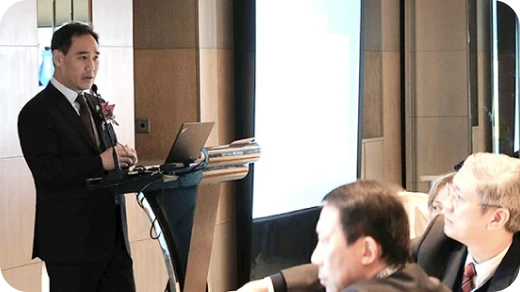
-
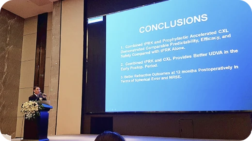
2017
-
2017 The 58th Annual Meeting of the Ophthalmological Society of Taiwan 해외 학회 발표
- 야간 빛 번짐의 원인인 고위수차 중 코마수치의 코웨이브(커스텀아이즈, CustomEyes) 수술 후 감소 효과
- 과거 라식, 라섹 후 부정난시, 야간빛번짐, 근시퇴행, 원추각막 등재교정, 부작용 치료에 코웨이브(커스텀아이즈, CustomEyes) 적용 사례
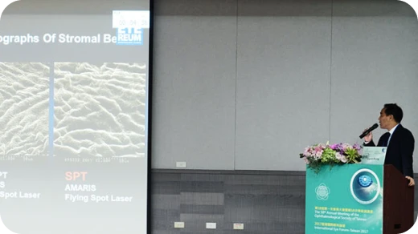
-
2017 제 118회 대한안과학회 학술대회 & 스마일 심포지엄 국내 학회 발표
- 라섹엑스트라 후 각막강성도 보존 효과
- 고도 난시예의 스마일라식과 코웨이브(커스텀아이즈, CustomEyes)라섹 수술 결과
- 아쿠아ICL렌즈삽입술 "다이나믹 볼팅" 현상 자세히 보기
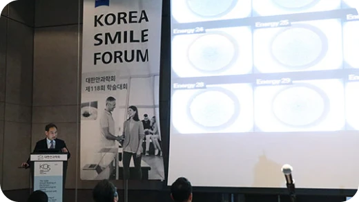
-
2017 ESCRS, Lisbon 해외 학회 발표
- 과거 레이저시력교정술 후 고위수차 교정을 위한 코웨이브(커스텀아이즈, CustomEyes) 치료 사례
- 굴절 난시 2.5 d 이상의 고도 난시 군에서의 스마일 수술과 코웨이브(커스텀아이즈, CustomEyes) 라섹 수술의 임상 결과 비교
- 스마일라식 수술 시 ‘Triple Marking’ 센트레이션의 효과
- 토릭아쿠아ICL 렌즈삽입술 6개월 후 회전 안정성 연구
- 라식, 라섹 수술 전후 Corvis ST로 측정한 각막강도의 변화
- 라섹엑스트라 각막강성도 보존효과 (2017.8 JCRS 등재)
- 라식라섹 후 부작용 치료사례 : 고위수차 증가로 인한 빛 번짐, 시력저하 교정 수술증례 및 재수술 보완수술 시 주의점 등에 대한 강연 진행
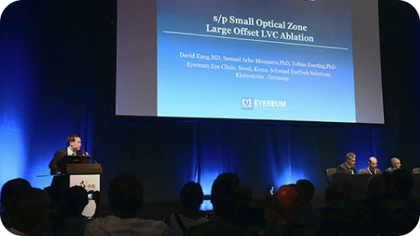
-
2017 ASCRS, Los Angeles 해외 학회 발표
- 로우에너지 스마일라식 MT 에 따른 생역학력 비교
- 백내장 다초점 인공수정체 수술결과
- 코웨이브(커스텀아이즈, CustomEyes)라섹의 빛 번짐 감소효과
- 난시교정용 토릭아쿠아ICL의 회전안전성
- PRK(라섹)/LASIK(라식)/Crosslinking(콜라겐교차결합술) 스마일,라식 부작용치료 공식세션의 좌장 초청
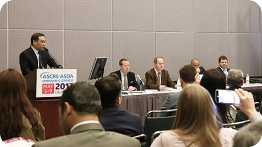
2016
-
Clinical Outcomes of Combined Corneal Wavefront-Guided and Hyperaspheric Surface Ablation Profiles to Correct Myopic Astigmatism.코웨이브(커스텀아이즈, CustomEyes) 이용한 시력교정 부작용 및 원추각막 치료 (좁은 광학부, 중심부이탈, 원추각막 치료사례)2016 중국국제굴절수술심포지움 International Refractive Surgery Symposium. Guangzhou, China
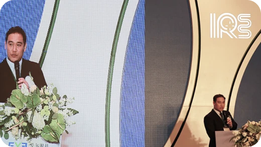
-
Customized Treatments on Keratoconus.코웨이브(커스텀아이즈, CustomEyes) 이용한 시력교정 부작용 및 원추각막 치료 (좁은 광학부, 중심부이탈, 원추각막 치료사례)2016 The 8th Chinese Corneal Diseases and Refractive Surgery Congress. Sanghai, China
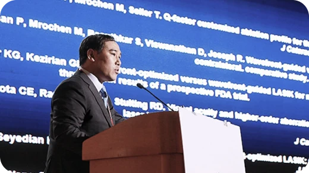
-
Refraction manager for pathologic treatments.코웨이브(커스텀아이즈, CustomEyes) 이용한 시력교정 부작용 및 원추각막 치료 (좁은 광학부, 중심부이탈, 원추각막 치료사례)2016 ASCRS AMARIS Symposium, New Orleans, USA
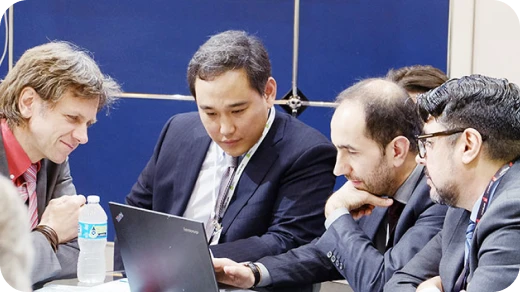
-
Simultaneous Corneal Wavefront-Guided Photorefractive Keratectomy and Corneal CXL After ICRS Implantation for Keratoconus.원추각막 치료에 케라 링 삽입술, 콜라겐 교차결합술과 코웨이브(커스텀아이즈, CustomEyes) 수술 세 가지 수술의 결합이 안전하고 원추각막의 구조적 안정성과 각막의 대칭성을 회복에 효과적 (나안 시력, K값, 코마수치에서 모두 개선됨)2016 ASCRS New Orleans, USA
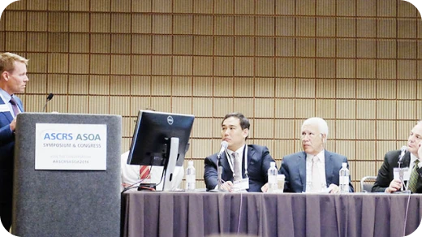
-
Clinical Outcomes of Combined Corneal Wavefront-Guided and Hyper aspheric Surface Ablation Profiles to correct Myopic Astigmatism.라섹수술 시 절삭량은 보존하면서 빛 번짐은 줄이는 하이퍼큐라섹(Hyper-Q) :
CWFG hyper-aspheric PRK가 수술 6개월 후, CWFG mild-aspheric PRK and non-CWFG mild-aspheric PRK보다 구면수차를 덜 발생시킴
* CWFG는 non-CWFG와 비교 시 코마를 덜 발생시킴2016 ASCRS New Orleans, USA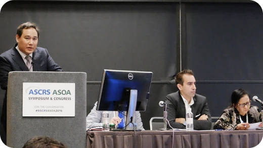
-
Changes in Corneal Posterior Elevations after combined photorefractive Keratectomy and Prophylactic High-Fluence Corneal Collagen CXL for Myopia.라섹 수술 후 콜라겐 교차결합술을 시행해 초고도근시교정 라섹 후에도 각막이 구조적 안정성을 이루게 하는 ‘엑스트라 라섹’(LASEK XTRA) 수술에서뿐 만 아니라, 실제 원추각막에서의 각막 콜라겐 교차결합술(Crosslinking, CXL)에서도 각막 후면의 고도에 안정된 양상을 보여줌으로써 각막 전면부에 국한된다고 여겨지던 콜라겐 교차결합술의 영향이 실제로는 각막 전체에 고루 영향을 준다는 것을 입증2016 ASCRS New Orleans, USA
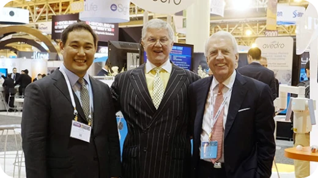
-
대한민국의 ICL 서베이 데이터 Challenging Cases & Clinical Pearls.Moderator으로서 아시아-태평양의 지난해 ICL렌즈삽입술의 국제적 임상결과와 공식 서베이 결과를 발표: 대한민국 사람들에게 사용되는 일반적인 ICL의 사이즈와 가장 많이 수술된 난시교정용 Toric ICL의 도수등을 비롯한 많은 임상적으로 의미있는 통계 발표2016 Sanghai, China
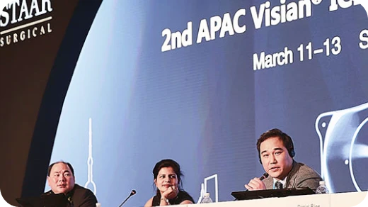
-
Where Should We Center The Treatment?_Centration.시력의 질을 높이기 위한 센트레이션 기법2016 The 16th AMARIS Symposium, Singapore
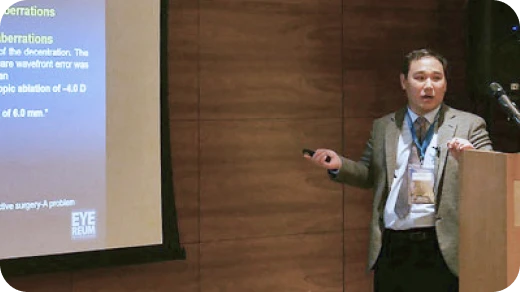
-
Controlling Pain & Haze After Surface Ablation Procedures: The Eyereum Protocol.무통라섹, 아이리움 프로토콜2016 The 16th AMARIS Symposium, Singapore
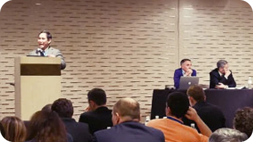
-
Transition to TRANS PRK.올레이저 라섹의 우수성2016 The 16th AMARIS Symposium, Singapore
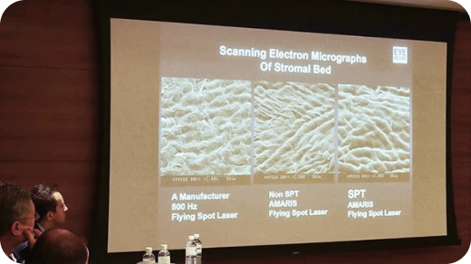
-
Customization Treatment of Keratoconic Eyes.코웨이브(커스텀아이즈, CustomEyes) 이용한 원추각막 맞춤 수술2016 The 16th AMARIS Symposium, Singapore
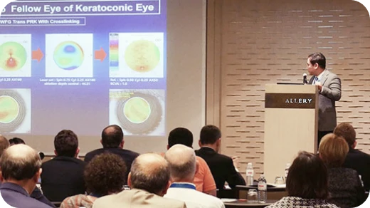
2015
-
Changes in posterior corneal elevations after simultaneous photorefractive keratectomy and accelerated corneal collagen Cross-Linking.각막콜라겐교차결합술(Crosslinking, CXL)를 시행하여 각막 후면의 곡률과 각막의 고도(Elevation, 높낮이)가 안정되어 각막 전체의 구조적 안정성이 생긴다는 것을 세계 최초로 입증함2015 11th International Congress of Corneal Cross-Linking. Boston, USA
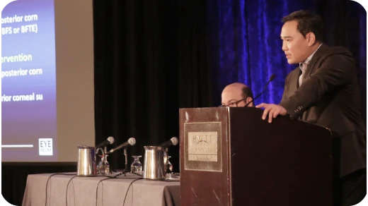
-
My Personal Surgical Experience With AMARIS Smart Pulse Technology. Comparison of Clinical Outcomes And Corneal Aberrations after Trans PRK between Two Types of Ablation Protocols: Aberration Free and Cornea Wavefront-Guided, Using Smart Pulse Technology with a High Repetition 1050Hz Excimer Laser.아마리스레드 스마트펄스(SPT)를 이용한 코웨이브(커스텀아이즈, CustomEyes)수술의 빛번짐 감소효과, 원추각막의 비대칭적인 각막의 대칭성 회복을 위해 코웨이브(커스텀아이즈, CustomEyes)수술을 시행한 우수한 임상결과 전 세계 발표The 10th International Ophthalmic Symposium Jinan Mingshui Eye Hospital
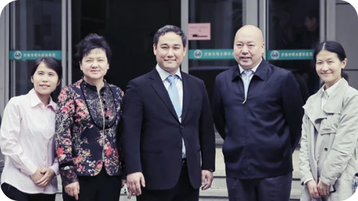
-
Comparison of Clinical Outcomes And Corneal Aberrations after Trans PRK between Two Types of Ablation Protocols: Aberration Free and Cornea Wavefront-Guided, Using Smart Pulse Technology with a High Repetition 1050Hz Excimer Laser.아마리스 레드 SPT LASER 로 600 명의 1100안을 대상으로 (COWAVE 610안, ABFREE 500) TRANS PRK를 실시한 결과 , 평균 나안 시력이 수술 후 2 weeks (UCVA 1 week:0.83±0.24. 2 weeks: 1.00±0.21) 을 보여 상당히 빠른 회복속도를 보임. 또한, COWAVE 수술 시 COMA 수치가 수술전 보다 평균 38.7% 감소. ABFREE GROUP과 비교하였을 때 SPHERICAL ABERRATION(구면수차) 은 유의하게 덜 발생함.2015 ESCRS Barcelona, Spain
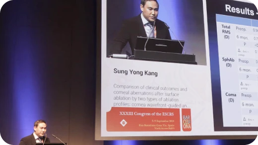
-
Effects of Laser assisted subepithelial keratectomy-Xtra procedures on corneal deformation parameters.라섹엑스트라의 시력회복효과와 라섹엑스트라 후 Corvis로 보여주는 강성도의 정량화2015 ESCRS Barcelona, Spain
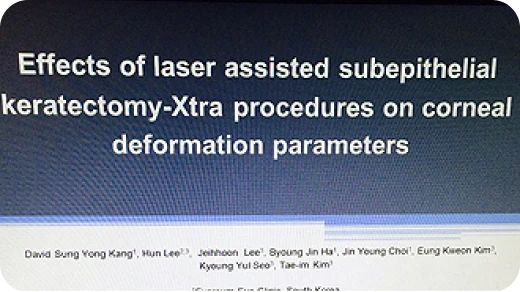
-
Effect of accommodation on vaulting and movement of posterior chamber phakic lenses in eyes with implantable collamer lenses.근거리 작업시 발생하는 V4c ICL의 Vaulting 변화2015 ESCRS Barcelona, Spain
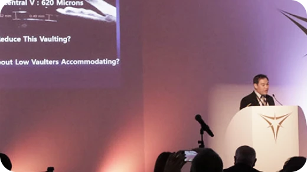
-
Smart Technology Using AMARIS RED Smart Pulse Compare COWAVE VS ABFREE.스마트펄스 테크놀로지 아마리스레드 스마트펄스를 이용한 COWAVE VS ABFREE 비교2015 ESCRS Barcelona, Spain
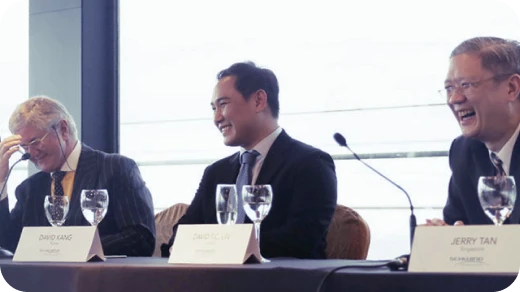
-
Dynamic ICL Behaviour During Light Reflex and Accomodation.‘빛 조건과 근거리 작업 시 발생하는 아쿠아ICL 조절반응’2015 ESCRS Barcelona, Spain
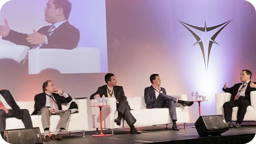
-
Comparison of the effectiveness of toric foldable iris-fixated phakic intraocular lens implantation and limbal relaxing incisions for correcting moderate-to-high myopic astigmatism토릭 알티플렉스 vs LRI 중등도~고도 난시교정 효과 비교2015 ESCRS Barcelona, Spain
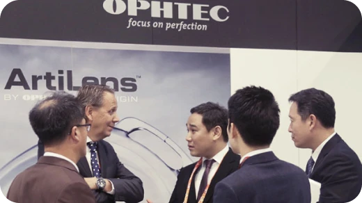
-
Preliminary Results of Visual Outcome of Photorefractive Keratectomy with Sequential Accelerated Corneal Crosslinking (LASEK XTRA).시력 회복 속도가 기존 라섹에 비해 교정 후 눈의 도수가 빠르게 안정화 되었고, 더불어 수술 전ㆍ후와 비교하여 각막 강성의 수치는 거의 변화가 없었다. 이는 각막 절삭 후 약해져야 하는 각막 강성이 더 강화된 것을 의미한다.2015 Avedro Ambassadors Club Meeting Zurich, Switzerland
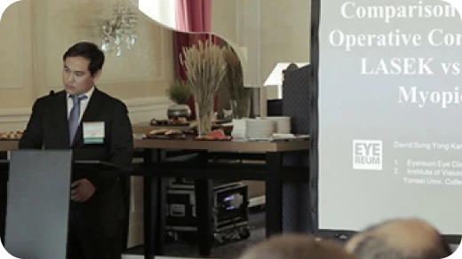
-
Comparison of Scheimpflug Post Operative Corneal Elevations After LASEK vs LASEK Xtra For Myopic Astigmatism.라섹 엑스트라(LASEK Xtra)의 수술 전과 비교해 각막후면부가 평평해지는 변화를 보였다. 일반 라섹(LASEK)은 수술 후 후면곡률(Posterior Elevation)이 증가한 반면, 라섹 엑스트라(LASEK Xtra)는 수술 후 후면곡률이 감소함을 보였다.2015 Avedro Ambassadors Club Meeting Zurich, Switzerland
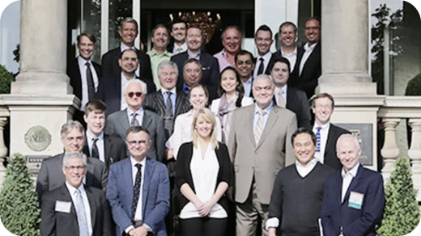
-
Comparison of Post Operative High Order Aberrations after Trans PRK between Two Types of Ablation Protocols: Aberration Free and Cornea Wavefront-Guided, Using a High Repetition 1050Hz Excimer Laser.근,난시(저위수차) 교정 뿐 아니라 수술 후 빛 번짐의 원인이 되는 각막의 미세한 굴절이(고위수차)까지 교정하는 ‘각막 지형 맞춤수술-코웨이브(커스텀아이즈, CustomEyes)’에 대한 연구로 Aberration Free와 코웨이브(커스텀아이즈, CustomEyes)를 비교했다. 전자는 코마와 구면수차 모두 증가한 반면 코마의 경우 코웨이브(커스텀아이즈, CustomEyes)는 감소, 구면수차는 증가했으나 Aberration Free보다는 적게 증가함을 확인할 수 있었다.2015 ASCRS San Diego, USA. Poster 발표
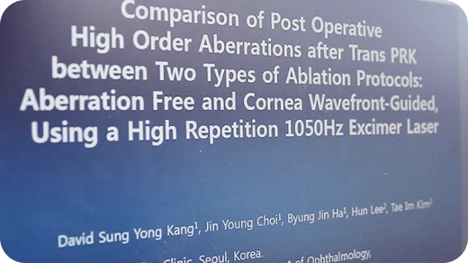
-
Comparison of Pain After Photorefractive Keratectomy of 2 Kinds of NSAID.
Comparison of Refractive Stability After Nontoric IOL With Limbal Relaxing Incisions And Toric Iris-Claw Phakic IOL.2015 ASCRS San Diego, USA. Poster 발표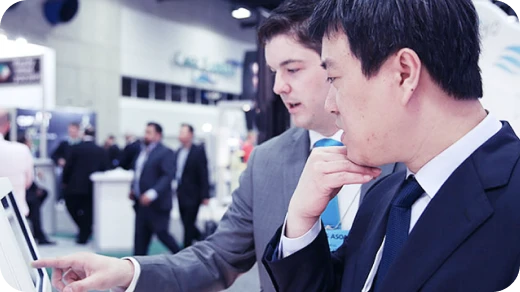
-
Hyper Ashperic vs Mild Aspheric Treatments for Surface Ablation.동공의 크기가 크고 고도수인 경우, 빛 번짐을 일으키는 구면수차를 줄이기 위해 광학부는 최대한 넓히면서 전체 절삭량을 최대한 보존하여 수술하는 새로운 하이퍼-큐(Hyper-Q) 수술을 발표했다.2015 APAO Guangzhou, China
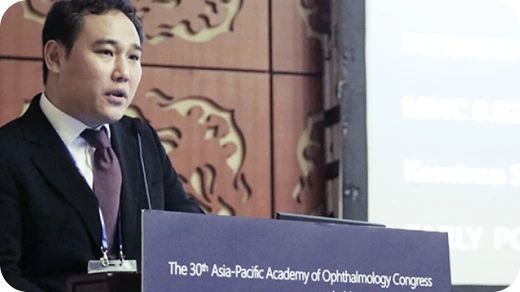
2014
-
One Year Clinical Characteristics of V4C ICL Implantation In Korea.한국에 아쿠아 ICL이 도입되고 1년여간의 임상결과 발표 주요 합병증인 백내장과 녹내장이 관찰되지 않았고, 아쿠아 ICL 렌즈가 아시아인에게 매우 적합함을 발표했다.2014 ESCRS London, STAAR Surgical Educational Forum
-
Comparison of Clinical outcomes Between Toric Artiflex phakic IOL and Artiflex phakic IOL with LRIs To Correct Myopia and Moderate Astigmatism.렌즈삽입술 중 전방렌즈의 대표주자인 ArtiFlex 렌즈는 근시교정용 렌즈와 근, 난시 교정용 토릭 렌즈가 있다. 난시가 많은 경우 대부분의 경우 토릭 렌즈를 선호하지만 가격이 매우 비싼 단점이 있는데, 근시교정용 렌즈를 삽입하고 각막 윤부 절개 난시교정술을 병행하면 -2.75 DIOPTER의 지난시까지는 토릭렌즈와 비슷한 임상 양상을 보였다. 단, LRI와 병행한 경우 수술 후 3~6 개월까지 건성안 증상이 더 높게 나타났으며 6개월 후에는 비슷한 것으로 조사됐다.2014 ESCRS London, OPHTEC Educational Forum
-
Dynamic Vaulting Changes in V4C vs V4 ICL Under Different Lighting Conditions.2014 ESCRS London, Free Paper Session: Posterior Chamber Phakic IOLS for Correction Of Myopia
-
Corneal Wavefront Surgery (코웨이브 - 커스텀아이즈, CustomEyes 수술법)
Controlling Pain & Haze After Surface Ablation Procedures: The EYEREUM Protocol (아이리움 프로토콜)아이리움안과의 표면 절제 수술(라섹 수술) 방법과 수술 후 관리에 대한 프로토콜을 설명. 수술 후 초기에 일찍 렌즈를 교체한 환자가 그렇지 않은 환자에 비하여 시력 회복이 월등하게 빠르며, 수술 후 소염제 사용빈도 역시 감소한 것으로 나타나 이를 중국학회에서 소개했다.2015 ESCRS Barcelona, Spain -
Infantile Nystagmus Syndrome (선천성 안구진탕증후군의 시력교정)기존에는 선천성 안구진탕이 있는 환자들은 시력교정수술 부적합 대상자로 분류되곤 했다. 이는 무의식적이고 지속적인 눈 떨림에 의해 수술 도중 레이저가 정확한 지점을 맞추지 못 할 수 있다는 이유 때문이었다. 하지만 1050hz의 안구 추적장치와 1050hz의 레이저 조사 속도가 1:1 커플링이 되면서 안구 추적기가 안구의 움직임을 보는 즉시 레이저를 조사할 수 있게 되었고, 수술 후 선천성 안구진탕 환자들의 각막 지형도 등을 통해 정확히 수술된 결과를 확인, 입증하게 되었다.2014 AMARIS User Forum, Xian, China
-
Prevalence of steroid induced ocular hypertension following refractive vision correction for myopic astigmatism.시력교정수술 후 사용이 되는 대표적인 혼탁 예방제인 0.1% FLUOROMETHOLONE 점안 후 발생하는 고 안압의 빈도를 발표하였는데, 약 8.3%의 환자군에서는 수술 후 6개월간 관찰한 결과 고 안압의 빈도가 한 번 이상 있었고, 이때 적절한 안압하강제로 치료되었다. 그러므로 수술 후 장기간 사용해야 하는 소염제 점안시에는 고 안압에 대한 정밀 검진을 진행하여 지속적인 경과 관찰을 유지해야 할 것으로 사료된다.2014년 ASCRS Boston, USA. Poster 발표
-
Dynamic Vaulting Changes in V4c (AQUA ICL) vs V4 ICL(ICL) under Different Lighting Conditions.
(아쿠아 ICL vs ICL의 빛에 의한 생체 내 움직임 변화)2014 KSCRS 정기학술대회 -
안구진탕 환자의 라섹수술 임상 결과안구진탕은 레이저시력교정술을 위해 한눈을 가리고집중하게 되면 눈 떨림이 심화되어 시행하기 힘들어 금기사항이었으나 레이저 조사속도가 빨라지고 안구추적장치가 발달되어 굴절교정술이 가능해짐에 안구 고정장치 없이도 수술을 안정적으로 시행했고, 시력향상과 시기능에도 호전을 보였다.2014 대한안과학회 발표

2013
-
Comparison of Visual Results of PRK with Manual and Laser Removal of Epithelium to Correct Myopia and Myopic Astigmatism.라섹수술 시 각막의 상피를 제거하는데는 크게 브러쉬로 제거하는 방법과 레이저로 상피를 제거하는 올레이저 수술 방법이 있다. 이 두 수술 군을 비교한 결과 올 레이저 라섹 수술 군이 수술 후 통증이 더 적었고, 수술 후 상피 치유 속도가 더 빨랐으며, 시력 회복 속도도 빨랐고, 수술 후 사용하는 혼탁 방지 안약인 0.1% FLUOROMETHOLONE의 사용 기간도 단축시킬 수 있었다.2013 The 9th International Symposium of Ophthalmology(ISO), Guangzhou, China
-
Customized Treatment.사람의 각막은 지문처럼 각기 다른 모양을 가지고 있는데 시력교정수술 시 근, 난시를 교정하는 저위 수차 교정과 함께 야간 빛 번짐 등을 유발하는 고위 수차까지 교정할 수 있는 맞춤형 수술에 대한 임상 결과를 발표했는데, 고위 수차가 유난히 많은 재수술 환자와 원추 각막 환자 외에 첫 시력교정 수술로써의 CORNEAL WAVEFRONT 수술 시 COMA 수치를 20% 이상 감소시키는 임상 결과를 발표하여 맞춤형 수술에 대한 효과를 입증했다.2013 The 9th International Symposium of Ophthalmology (ISO), Guangzhou, China
-
Prevalence of Steroid Induced Ocular Hypertension Following Refractive Vision Correction for Myopic Astigmatism. (시력교정수술과 안압상승)수술 후 소염, 각막혼탁 예방을 위해 사용하는 스테로이드 안약(0.1% 플루메토론) 점안 후 발생하는 고안압의 빈도를 발표했다. 약 8.3%의 환자군에서는 수술후 6개월간 관찰한 결과 고안압의 빈도가 한 번이상 있었고 이때 적절한 안압하강제로 치료되었다. 그러므로 수술 후 장기간 사용해야 하는 스테로이드 안약 점안시에는 고안압에 대한 정밀검진을 진행하여 지속적인 경과관찰을 유지해야한다.2013 EGA 경주 (English Glaucoma Academy 2013)
-
Trans-Epithelial PRK.2013 The 5th 각막굴절광학학술대회, Wuhan, China